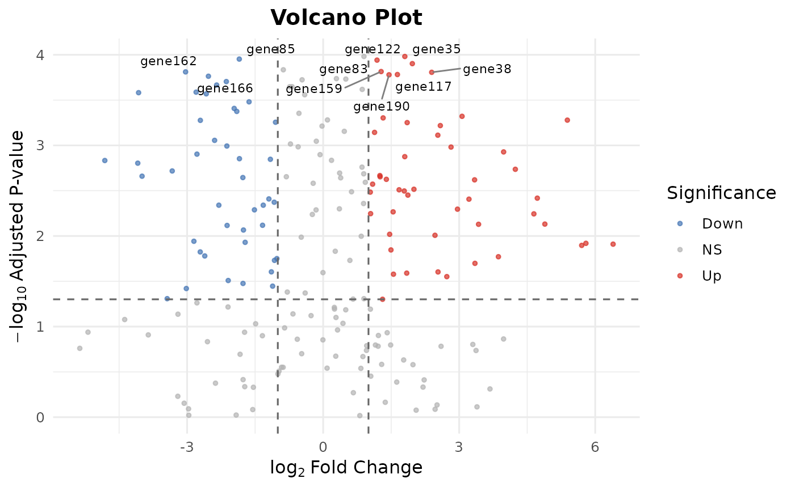

Creates a publication-ready volcano plot from differential expression results.
Usage
bb_volcano(
de_result,
fc_cutoff = 1,
p_cutoff = 0.05,
label_genes = NULL,
n_label = 10L,
point_size = 1,
colors = c(up = "#D73027", down = "#4575B4", ns = "grey70")
)Arguments
- de_result
A data.frame with columns
gene,log2fc,pvalue,padj. Typically the output ofbb_deseq2(),bb_edger(), orbb_limma_voom().- fc_cutoff
Numeric. Absolute log2 fold-change cutoff for significance. Default
1.- p_cutoff
Numeric. Adjusted p-value cutoff for significance. Default
0.05.- label_genes
Character vector. Specific gene names to label on the plot. If
NULL(default), the topn_labelsignificant genes are labeled.- n_label
Integer. Number of top significant genes to auto-label when
label_genesisNULL. Default10.- point_size
Numeric. Size of points. Default
1.- colors
Named character vector of length 3 for up, down, and non-significant colors.
Value
A ggplot2::ggplot object.
Examples
de <- data.frame(
gene = paste0("gene", 1:200),
log2fc = rnorm(200, 0, 2),
pvalue = 10^(-runif(200, 0, 5)),
padj = 10^(-runif(200, 0, 4))
)
bb_volcano(de)
#> Warning: Removed 190 rows containing missing values or values outside the scale range
#> (`geom_text_repel()`).
